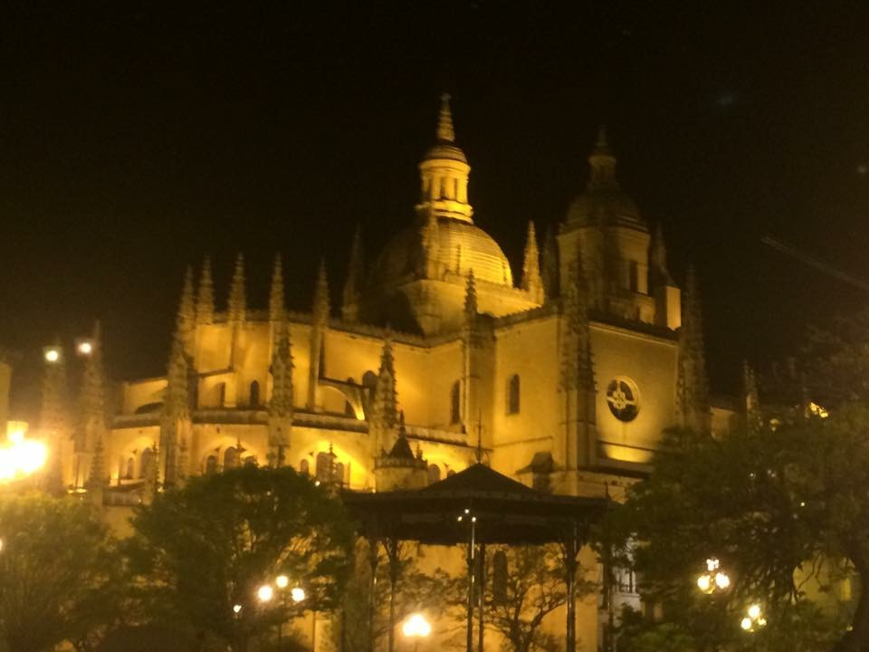
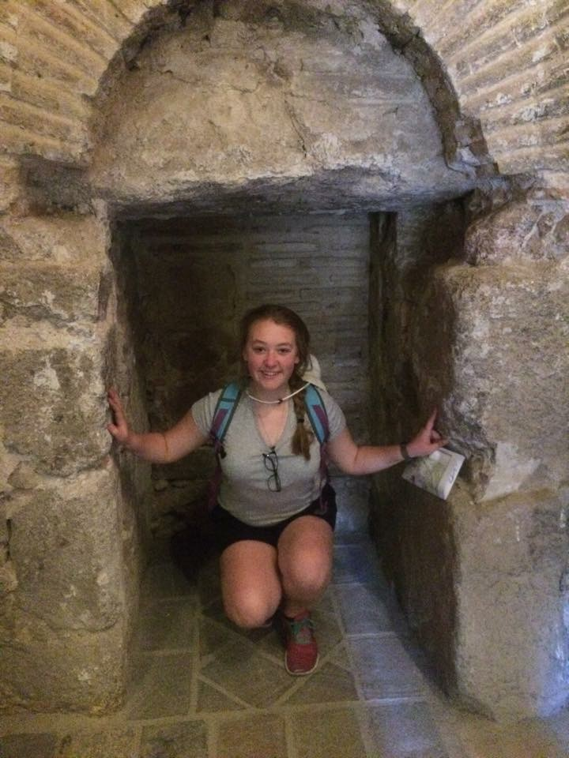
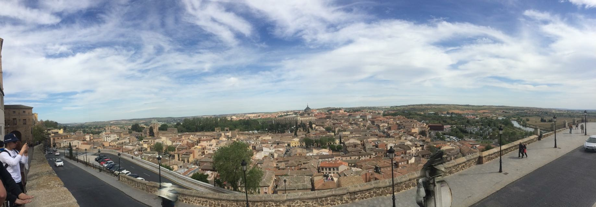
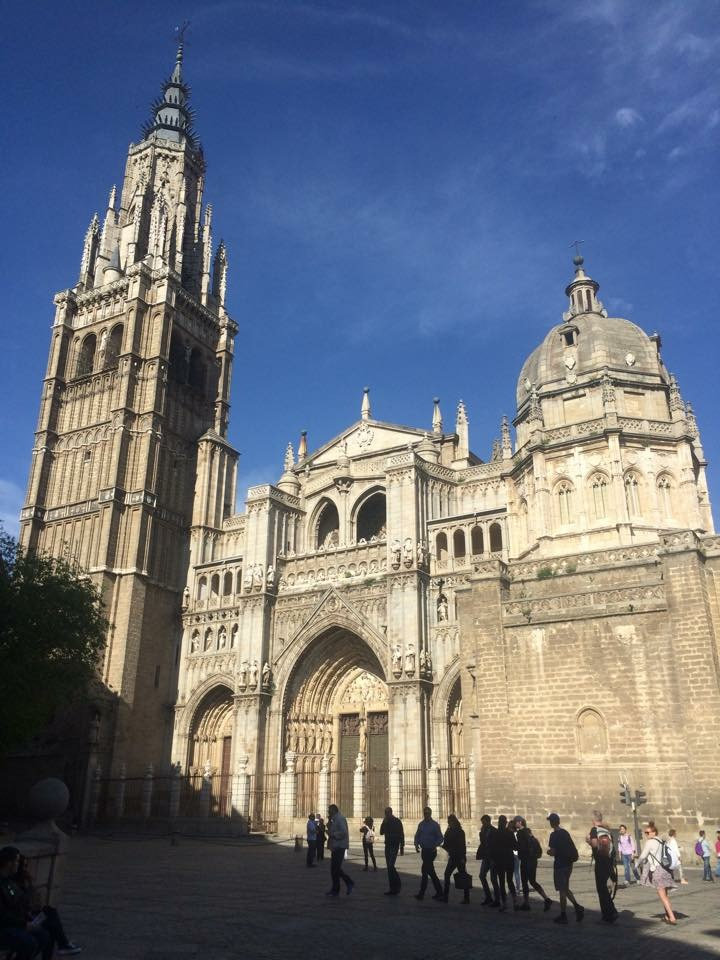
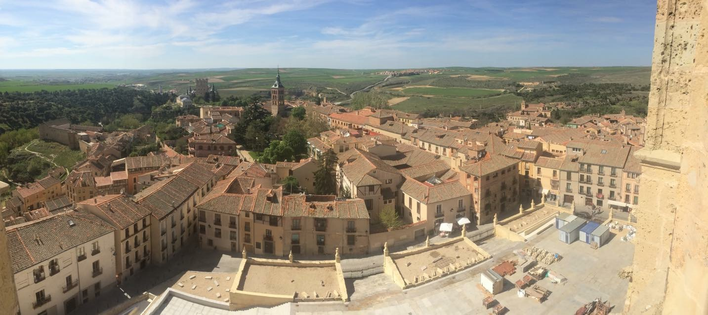
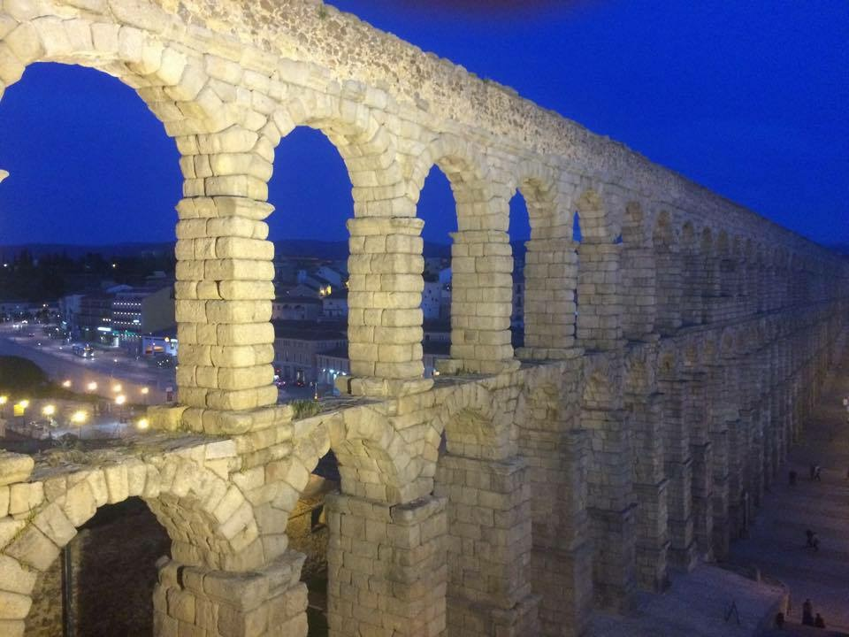

The above image was taken atop the rooftop bar just steps away from the Plaza del Sol!
Starting from the beginning, I was always interested in what was going on outside the United States and the small town I was raised in, in rural southern Maine. My little town was all I knew for the longest time. Outside of driving to New Hampshire for a weekend, my parents were never big fans of traveling, so we didn't. Until I was 5 years old I had never left Maine or New Hampsire, then my father decided to visit his parent at their winter home in Nokomis, FL; this was my first time on a plane and I remember being so excited about flying, and no part of flying gave me the smallest bit of fright or anxiousness. After that trip my dad got very sick and we were unable to travel for lengthy periods of time. So, as a family, we began the outings to New Hampshire again; leaving me curious about what else was out there. It wasn't until I was 16 and a Junior in high school that I was able to travel again. This time, I was given the opportunity to travel to Madrid, Spain and it surrounding cities. It lasted ten days and I had the time of my life and I cannot wait to return to Spain and see what else it has to offer! This is where my real interest in travel began.
With an International based major and foreign language major, I am required to do a study abroad term. I am currently planning to go abroad spring 2018 and I look forward to going overseas and exploring what the world has to offer through out my college career!
Plaza Mayor in Madrid
Nighttime view of the Cathedral in Segovia
Climbing the Tower in the Cathedral in Segovia
At the Old Gate of the city in Toledo Spain, from this point you can see over the whole eastern side of the city!
The front of the Cathedral in Toledo, one of the oldest in Europe!
Top of the tower in the Cathedral in Segovia!
Roman Aqueduct in Segovia